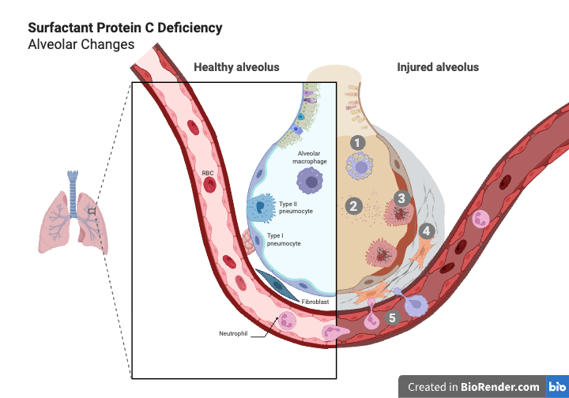

| SP‑C Deficiency ‣ Course Overview How Lungs Work How Do We Breathe? What Is Surface Tension? How Is Surfactant Made? Words to Know SP‑C Deficiency What Is SP‑C Deficiency? What Causes It? Signs & Symptoms Getting a Diagnosis Treatment & Care Outlook & Prognosis Living with SP‑C Questions for Your Doctor Resources Downloads & Links |
Before reading this section, make sure you have completed Part 1: How Lungs Work. Understanding how healthy lungs make and use surfactant makes this section much easier to follow. What Is SP‑C Deficiency? What this image shows:
SP‑C deficiency is a rare lung disease caused by a change — called a mutation — in a gene called SFTPC. This gene carries the instructions for making a protein called surfactant protein C, or SP‑C. SP‑C is an important part of the surfactant that coats the alveoli. It helps surfactant spread evenly and stay stable — keeping the alveoli open with each breath. When the SFTPC gene has a mutation, the Type II cells produce a misshapen version of the SP‑C protein. This broken protein gets stuck inside the cell instead of being released. Over time, the buildup injures the cell and causes inflammation in the lung tissue — leading to progressive lung disease. How Does It Affect the Lungs?As damaged Type II cells die and inflammation spreads, the lung tissue can begin to scar. This scarring — called fibrosis — makes the lungs stiffer and harder to expand. Over time, breathing becomes more difficult and oxygen levels in the blood may fall. The disease can range from very severe in newborns to slowly worsening over years in older children or even adults. Even two people with the exact same mutation can have very different levels of disease. Key Points
What Is chILD?chILD stands for Children’s Interstitial and Diffuse Lung Disease — a group of rare conditions where the lung tissue itself becomes inflamed and damaged, not just the airways. SP‑C deficiency is one of several types of chILD. Other types include SP‑B deficiency and ABCA3 deficiency. |